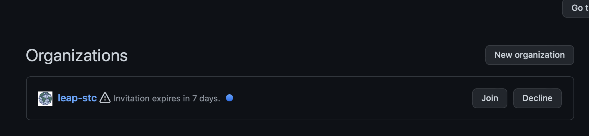

FAQs#
“Where is my invite?”#
Please check your email account (the one you used to sign up for Github - this is independent of the email you use for LEAP) for an invite that will look similar to this:

Click the link and accept all invites.
Alternatively you can log into your github account, and should see a notification in the top right menu under the “Organizations” tab.

You can follow that and accept the invitation there aswell.
{kind=link}
I cannot log into the hub 😱#
If you are unable to log into the hub, please check the following steps:
Check if you are member of the appropriate github teams.
If you are not follow these steps:
Did you sign up for LEAP membership? This will be done for you if you sign up for an event like the Momentum bootcamp!
Did you receive a github invite? Here is how to check for that.
Check again if they are part of the appropriate github teams.
If these steps do not work, please reach out to the Data and Computation Team.
If you are member of one of the github teams, ask them to try the following steps:
Refresh the browser cache
Try a different browser
Restart the computer
If these steps do not work, please reach out to the Data and Computation Team.
I received a warning about space on my User Directory#
If you get a Hub Usage Alert email, this means you are violating the User Directory storage limit (to learn why this limit exists, see read about User Directories). Remember that user directories are for scripts and notebooks not datasets! Users who persistently violate hub usage policies may temporarily get reduced cloud access.
Troubleshooting
To see which files and directories are taking up the bulk of your storage, run
du -h --max-depth=1 ~/ | sort -hin Terminal. It will likely reveal cached files and small/medium size data files that can be removed without disrupting typical usage.Delete cached files, ipython checkpoints, and any other unwanted files.
If you still require more storage, it is likely that you are storing downloaded data in your user directory. We recommend storing data in a LEAP cloud bucket or data catalog. For more information, please consult our Data Guide and LEAP-Pangeo Data Policy.
Our goal is to accomodate all community members and thus we are happy to assist users in relocating data. If you have any concerns, please reach out to the Data and Computation Team.
Dask “Killed Workers”#
The “Killed Worker” message in dask can result due to a variety of reasons. Here are some of the common reasons why you might see such an error message
Datasets Chunks too large#
Issue The default dask worker configuration can deal well with dataset chunk sizes of ~100MB. If the chunks of your data are significantly larger, your worker might crash just upon loading a few of these chunks into memory.
Solution You can change the configuration of your dask workers and increase the memory each worker has to deal with larger chunks. You can adjust the memory by passing additional options to the dask-gatway cluster upon creation:
from dask_gateway import Gateway
gateway = Gateway()
options = gateway.cluster_options()
options.worker_memory = 10 # 10 GB of memory per worker.
# Create a cluster with those options
cluster = gateway.new_cluster(options)
cluster.scale(...)
client = cluster.get_client()